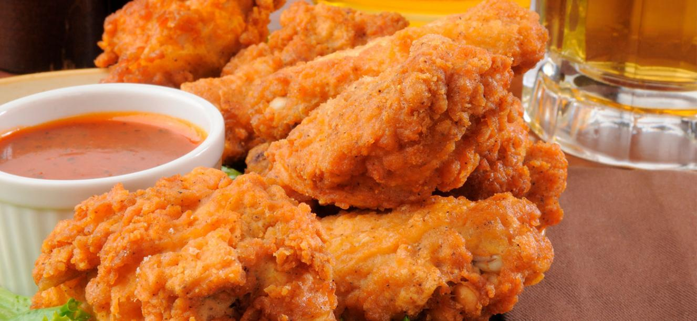

--Pollo Apanado--

El pollo apanado es un platillo que consiste en cubrir el pollo con harina y huevo , y luego freírlo.
Se caracteriza por su corteza crujiente y su interior jugoso.
--Ingredientes--
- Pollo
- Condimentos
- Arina
- Huevos
- Aceite
- Agua
--Paso a Paso--
- Lavar el pollo lo mejor posible
- Condimentarlo (ya puede ser con paquetes de condimento o con cebolla y otra especias).
- Dejar el pollo bien tapado en lo que se adhiere el condimento al pollo.
- En una olla grande viertes el aceite (lo suficiente para que cubra el pollo completamente).
- Esperar a que el aceite se encuentre lo mas caliente posible (aun no hechamos nada).
- En una cacerola aparte preparamos la mezcla para apanar el pollo.
- Vertimos arina junto con un huevo o dos dependiendo de la cantidad de presas de pollo que vayan a apanar.
- A la mezcla le agregamos un poco de agua y revolvemos hasta que quede especita la mezcla.
- Una vez comprobemos que el aceite esta lo suficientemente caliente vertimos las presas de pollo junto con la mezcla.
- Cada presa de pollo la envolvemos en la mezcla preparada y lo vertimos al aceite caliente asegurandonos de que quede completamente cubierto.
- Realizamos el mismo proceso con todas las presas de pollo que tenemos.
- Esperamos de 30-40 minutos a que el pollo quede listo.